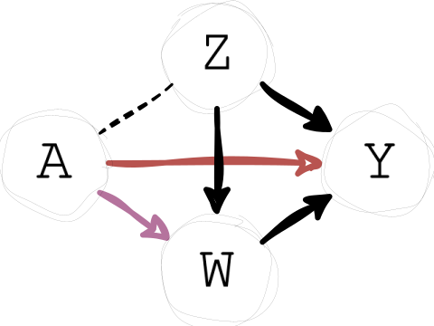
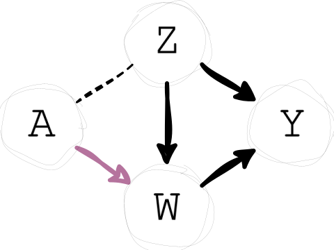

Erfassung und Minderung von Bias in LLM-gestützter richterlicher Entscheidungsfindung
Forschungsagenda
Ziel und Forschungsfragen
LLM-gestützte richterliche Entscheidungen, die erklären, ob sie verzerrt sind und wie sich der Bias mindern lässt.
Gerichtsakte FF1 definieren
LLM FF3 mindern
Entscheidung FF2 identifizieren
Erklärung FF4 erklären
- FF1 Wie lässt sich Bias in richterlichen Entscheidungen definieren? → Schritt 1
- FF2 Wie lässt sich Bias in LLM-gestützten richterlichen Entscheidungen identifizieren? → Schritt 2
- FF3 Wie lässt sich Bias in LLM-gestützten richterlichen Entscheidungen mindern? → Schritt 3
- FF4 Wie lässt sich Bias in LLM-gestützten richterlichen Entscheidungen erklären? → Schritt 4
Kausale Bias-Pfade in richterlicher Entscheidungsfindung FF1a
Über welche kausalen Pfade (Mediatoren, Confounder) beeinflussen sensible Merkmale Entscheidungen?
Beispiel (illustrativ): Trunkenheitsfahrt
- A sensibles Merkmal: Staatsangehörigkeit
- Z Confounder: Alter
- W Mediator: verkehrsrechtliche Vorstrafen
- Y Entscheidung: Geldstrafe und Dauer des Fahrverbots
Direkt A → Y
Indirekt A → W → Y
Scheinbar A ┄ Z → Y
Schritt 2: Testen FF2
Methode
- Generierung gekoppelter faktischer und kontrafaktischer Testdatensätze je Bias-Pfad
- Generierung von LLM-Entscheidungen für jeden faktischen und kontrafaktischen Testdatensatz
- Vergleich der LLM-Entscheidungen zur Quantifizierung des Effekts je Bias-Pfad

Faktisch| Pfad | Kontrast | Δ Mon.* | p* |
|---|---|---|---|
| direkt | Y − Y′1 | +1,2 | <,001 |
| indirekt | Y′1 − Y′2 | +0,5 | ,041 |
| gesamt | Y − Y′2 | +1,7 | <,001 |

Kontrafaktisch 1ohne direkten Pfad
ohne Bias-Pfade
Beitrag
- Generierungspipeline für gekoppelte faktisch-kontrafaktische Testdatensätze
- Quantifizierung kausaler Bias-Effekte in LLM-gestützten Entscheidungen
Schritt 3: Minderung FF3
Methode
- Vorverarbeitung der Eingabedaten mit einem Text-Autoencoder und MLOs.
- Generierung von Entscheidungen für alle faktischen und kontrafaktischen Versionen des DAG.
Bias
Beitrag
Anwendung von MLOs (Kestel et al., 2026)
Schritt 4: Erklärung FF4
Methode
Ein LLM erklärt das Ergebnis der Effektquantifizierung aus Schritt 3 in natürlicher Sprache.
| Pfad | Kontrast | Δ Mon.* |
|---|---|---|
| direkt | Y − Y′1 | +1,2 |
| indirekt | Y′1 − Y′2 | +0,5 |
| gesamt | Y − Y′2 | +1,7 |
„Das vorgeschlagene Fahrverbot beträgt 9,0 Monate. Für eine ansonsten identische Person mit deutscher Staatsangehörigkeit wäre es 1,7 Monate kürzer: 1,2 Monate gehen direkt auf die Staatsangehörigkeit zurück, 0,5 Monate auf die damit verbundenen Vorstrafen.“
Beitrag
- Anwendung der LLM-Erklärungsmethodik (Berarducci et al., 2026)
- Verständliche Erklärung kausaler Bias-Effekte in einer konkreten LLM-gestützten Entscheidung
Schritt 1: Konzeptualisierung FF1b
Methode
- Workshops mit Rechtsexpert:innen zur Identifikation kausaler Pfade und Konstruktion kausaler DAGs
- Zusammenarbeit mit dem ADA-Projekt1
- 1 Workshop pro Anwendungsfall
workshopRechtsexpert:innen
+ ADA
Beitrag
- Workshop-/Interview-Leitfaden zur Erhebung kausaler DAGs
- Kausaler DAG für jeden Anwendungsfall (Plecko & Bareinboim, 2022)
Finales Modul zur Bias-Quantifizierung und -Minderung
kontrafaktisch
Entscheidung
Literatur
Fußnoten
Bias in LLM-gestützter richterlicher Entscheidungsfindung - Leo Kestel